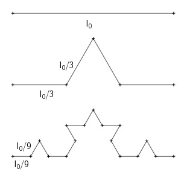
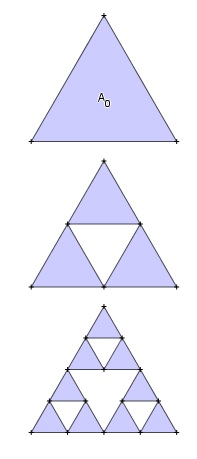

Aufgabe 111 a) Wie groß ist für l0 = 1 die Länge ln nach n Schritten?

b) Wie groß ist im gleichseitigen Dreieck für A0 = 1 die farbige Fläche An nach n Schritten?
a) l1 nach dem ersten Schritt: 1 4 l1 = 4 * --- * l0 = ---l0 3 3 l2 nach dem zweiten Schritt: 1 16 4 l2 = 16 * --- * l0 = ----l0 = (---)2 * l0 9 9 3 . . 4 ln = (---)n * l0 3 b) Die Winkel im Dreieck sind gleich groß und betragen 60°. A1 nach dem ersten Schritt: Es entstehen 4 gleichgroße Dreiecke mit dem Flächeninhalt --> 1 --- * A0 4 Die gefärbten Flächen haben einen Flächeninhalt A1 von: 3 A1 = --- * A0 4 A2 nach dem zweiten Schritt: Es entstehen 9 gleichgroße Dreiecke mit dem Flächeninhalt: 1 1 1 --- * --- A0 = ---- * A0 4 4 16 Die gefärbten Flächen haben einen Flächeninhalt A2 von: 9 3 A2 = ---- * A0 = (---)² * A0 16 4 . . 3 An = (---)n * A0 4